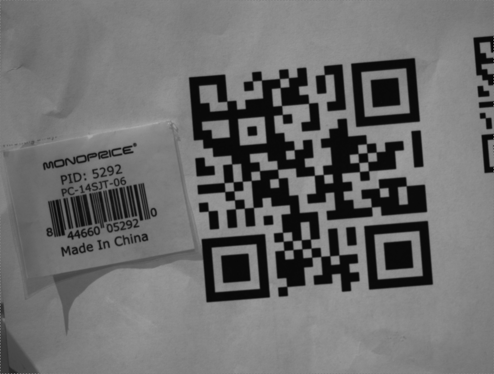

The ADPluginBar plugin depends on several external libraries. These include:
Further installation instructions are located in the README.md file in the top level of this repository.
The sample image used in all screens in this document captured with a prosilica camera
ADPluginBar (current version 2-0) has several requirements for proper functionality. As pf R2-0, 8 bit and 16 bit images are supported, in both Mono and RGB mode.
Not that the image will be converted to grayscale if input is in RGB. Output arrays from the plugin will be in RGB because barcode bounding boxes are displayed in blue.
Some conversion information between NDArrays and OpenCV Mat objects used as a conversion element is included in a file in the barSrc directory. Additionally, though inverted
bar codes are supported, they require a PV flag to be set, and thus cannot be read in conjunction with standard bar or QR codes. They are also only supported in 8-bit mode. This is another feature
that is being considered for a future release.
Once ADPluginBar is installed, Some edits must be made to the common plugins screen linked to your detector. It should look as follows:
The Address that should be passed to each of the elements is Bar1. Thus, the entire PV would be, for example, "$(P)Bar1:PortName_RBV" for the portname field.
The "more" button should be linked to the provided "NDPluginBar.opi" screen, or an equivalent adl or edl screen. (Currently only CSS screens are provided, though
other types may be looked into in the future.) The NDPluginBar.opi screen looks as follows:
ADPluginBar supports reading up to 5 bar codes simultaneously, though currently only the first discovered barcode has its coordinates stored as a PV.
In order to access the remaining 4 barcodes, simply press the button titled: "View 1-5". Once pressed, the following screen will display:
As you can see, in the sample image used above, two barcodes are present, the QR code which was generated with a test message, and a two dimensional barcode taken form
a box from around the test area. Both codes were detected ane placed into PVs BarcodeMessage1_RBV, BarcodeType1_RBV and the '2' equivalents.
As of release R2-0, ADPluginBar supports a live view of the detected barcodes in an image. To use this feature, set use any EPICS viewer, and set the Array Port to BAR1,
or whatever port your plugin has been set to. In the image above, I used the NDPluginStdArrays plugin for viewing in CSS. When a barcode is detected, a blue bounding box is drawn
around the code.
For more information on the newest release of ADPluginBar please check the RELEASE.md file in the top level directory. Additionally, please contact the
author with any questions regarding the usage of the plugin or feature requests.
Below is an explanation of functions included in ADPluginBar and the general plugin structure.
All of the plugin Source code is housed in the barApp/barSrc directory. The barApp/Db/NDBar.template file contains PV definitions. barApp/screens contains CSS .opi files.
| Function Name | InputArgs | OutputArgs | Description |
|---|---|---|---|
| initPVArrays | None | None | Function that places PV indexes into arrays for easier iteration |
| printCVError | None | None | Function for printing out OpenCV exception information |
| clearPreviousCodes | None | None | Function that clears out the currently detected barcodes. |
| ndArray2Mat | pArray, arrayInfo | img | Function that converts input NDArray pArray into output Mat img |
| mat2NDArray | img | pScratch | Function that converts input Mat img into output NDArray pScratch |
| fix_inverted | img | None | Function that inverts black and white in image to allow for detecting inverted codes |
| push_corners | symbol, update_corners | discovered | Function that updates poition of discovered code from symbol and updates PVs if update_corners flag set |
| update_corners | discovered | None | Function that updateds corner PVs to those of discovered |
| scan_image | img | None | Function that changes Mat to zbar image and scans it with zbar |
| clear_unused_barcode_pvs | counter | None | Function that resets PVs that had detected barcode earlier, but no longer do |
| decode_bar_codes | img | None | Function that scans image, then loops over any detected codes and updates PVs |
| show_bar_codes | img | None | Function that takes list of discovered codes and draws them on the image based on pushed corners |
| writeInt32 | pasynUser, value | None | Function that is called when a PV is written to |
| processCallbacks | pArray | None | Function that is called for each NDArray created by the attached driver |
More detailed documentation can be found in the plugin Src.